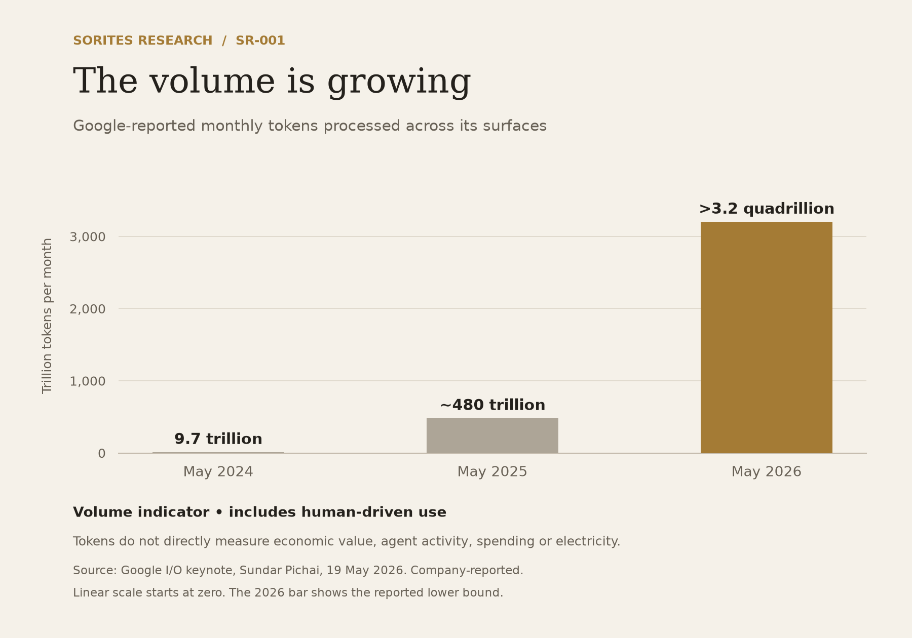

The Agent Multiplication Effect
What happens when the machines become one another’s customers?
Drew Clement | Sorites Research | Foundational Thesis SR-001 | Version 1.1 · October 12, 2026 · Original publication October 11, 2026
Research classification: Foundational thesis. Investment recommendation: None. Status: Version 1.1, published October 12, 2026.
The chatbot is a terrible way to measure the future of AI.
I started thinking about what happens when everyone has a personal AI agent. Not a chatbot you occasionally ask questions, but something that works on your behalf. It researches purchases, books appointments, compares insurance, negotiates with suppliers, and handles the thousands of small tasks that eat our time.
There are billions of potential users. That is a big market on its own. But then I thought about the other side of those interactions. If my agent contacts a business, who answers it?
The business has agents too. One handles customer service, another verifies identity, another checks inventory, and others deal with pricing, scheduling, fraud, payments, logistics and compliance. My one agent could generate work for ten more, and those ten might need to talk to another company’s systems.
One person. One agent. Ten more agents on the other side. I am not claiming every interaction needs exactly ten. The point is that demand can multiply on both sides of a transaction.
No single agent is the agent economy. No single exchange between two machines is a heap. But as those exchanges accumulate, human-initiated requests may become a smaller share of the work happening on the network. The question is whether that growing heap produces enough value to sustain itself.
Then the architecture changed again. Agent systems can coordinate multiple specialized workers around a single objective: split a problem, distribute the pieces, compare competing answers, test the results, commission more research. Measuring that by counting chatbot users is like measuring the early internet by counting emails.
The question I care about is how much economically valuable work machines will eventually do for other machines. I suspect the answer is far bigger than the usual picture of the AI market. If so, the consequences reach into electricity, manufacturing, networks, and businesses that have never called themselves AI companies. I call this the Agent Multiplication Effect.
The meter is already moving
One useful volume indicator is the number of tokens processed. At Google I/O in May 2026, Sundar Pichai said Google was processing over 3.2 quadrillion tokens a month across its surfaces, up from roughly 480 trillion a year earlier and 9.7 trillion two years before that. Google described that as a roughly sevenfold jump in twelve months; the rounded figures imply about 6.7 times the previous volume.
Source: Sundar Pichai, remarks at Google I/O 2026, May 19, 2026, published by Google.
Two cautions. Tokens measure volume, not value, and the figure includes plenty of human-driven use. It is also company-reported. I treat it as one useful volume indicator. It does not isolate agent activity, and changes in product and model mix can affect the comparison.
Anthropic’s June 2026 Economic Index points the same way. The company said Claude sessions now increasingly consist of long-running agentic tasks, driven by Claude Code and Cowork, and that chat transcripts no longer fully capture how people use AI. These are vendor-reported findings and have not been independently verified.
Source: Anthropic, Anthropic Economic Index report: Cadences, June 26, 2026.
Adoption data is more cautious. McKinsey’s November 2025 survey found 62% of respondents reported that their organizations were experimenting with or scaling AI agents, but only 23% reported scaling agentic systems in at least one business function. Experimentation is not mature adoption. It does show that organizations are actively trying a different way of using AI.

Figure 1. Company-reported token volume across Google’s surfaces. Includes human-driven use; does not isolate agent activity or measure economic value, spending or electricity demand. Linear scale starts at zero; the 2026 bar shows the reported lower bound.
From answering questions to accomplishing objectives
The first wave of generative AI was a familiar interaction. A person asks, a model answers, the interaction ends. A human starts and supervises the work.
Agents change the relationship. A person assigns an objective, and the system finds the tasks, uses tools, gathers information, takes actions and checks its own progress.
The economics follow. A chatbot might help an employee compare two suppliers. An agentic system might be asked to evaluate every supplier the company uses, find contract discrepancies, investigate alternatives, calculate switching costs and return a ranked set of recommendations. The second request can generate orders of magnitude more computation than the first, and much of it runs without a human starting each step.
When agents meet agents
Take a car purchase. My agent is told to find a vehicle, compare financing and insurance, and arrange a deal within a budget. It contacts dealerships, whose systems check inventory, pricing and delivery dates. Lenders and insurers are queried. Identity, fraud and payment checks run. Logistics are coordinated.
Commerce already runs on networks of APIs, databases and payment processors, so none of this is new in kind. What AI changes is how much previously human work becomes automatable: negotiation, interpreting unstructured information, handling exceptions, coordinating messy workflows. That makes more tasks worth doing. An insurer evaluates more policies. A buyer compares more suppliers. A retailer reprices more often. And one agent’s output becomes another agent’s input.
The multiplier is not the number of AI personalities involved. It is the amount of computation produced by the original economic objective. A process that once needed five database queries might now need ten model calls, three tools and a verification step. Or better technology might collapse it into one efficient call. Both are possible. What matters is that one human interaction no longer maps to one unit of AI demand.
More agents are not automatically better
In its January 2026 summary, Google Research described an evaluation of 180 agent configurations across models, tasks and organizational structures. Multiple agents helped on tasks that could be split into parallel work. On certain sequential tasks, adding agents made performance worse. Coordination cost resources, communication consumed capacity, and errors spread between workers. Architecture mattered a great deal.
This sharpens the question instead of weakening it. The winner may not be the company that deploys the most agents. It may be the one that organizes machine intelligence best. I will measure productive computation, not count digital workers.
The efficiency paradox
The strongest argument against sustained compute demand is that AI keeps getting cheaper, and it does. Stanford’s 2025 AI Index found the cost of querying a model at roughly GPT-3.5-level performance fell more than 280-fold between November 2022 and October 2024. This is a historical benchmark from the 2025 report, not an estimate of current prices. Inference prices also do not directly measure hardware or electricity efficiency.
Source: Stanford HAI, 2025 AI Index Report, Research and Development.
At first glance that sounds bearish for infrastructure. If a model is hundreds of times cheaper, surely we need less hardware and electricity. But falling costs also unlock demand that did not exist before. An analysis that costs an hour of human time and yields a few dollars of value was never worth doing. At a fraction of a cent, it is. Then a company discovers it has ten million such decisions available.
This is the logic of Jevons paradox. In the nineteenth century, William Stanley Jevons observed that more efficient coal use increased total coal consumption by making new uses economical. Cheaper machine intelligence could do the same: more applications, more work, more demand for computation.
Smaller specialized models can widen this further. A large model might plan an objective while small ones handle routine classification and monitoring at low cost, which makes millions of narrow tasks affordable. Cheaper tasks and rising total demand are not a contradiction. The question is which effect dominates. For comparable work over the same period, total spending is the price per unit multiplied by the number of units. A halving of price requires more than a doubling of volume for spending to rise. That comparison needs consistent measures of task quality, scope and completion. Google’s aggregate token figures and Stanford’s historical benchmark prices are different series; putting them side by side cannot establish the result.
Spending is only one part of the thesis. Physical computation, electricity use and supplier profits can follow different paths as models, hardware and prices change. The mechanism is a change in the set of tasks worth doing. When the full cost of completing and checking a task falls below its expected value, a business can move from sampling a few cases to processing every case. Each newly economical workflow can also commission work from other systems. If the number of useful completed tasks grows faster than the resources required per task fall, aggregate resource demand rises. If it does not, the infrastructure argument fails. This is a conditional mechanism, not a conclusion already established by the token data.
If intelligence becomes cheap enough to apply widely, demand could become less limited by how often humans choose to ask questions and more dependent on how much useful work can be done economically.
The physical world sends the invoice
Computation needs physical things: chips, memory, networking, cooling, buildings, transformers, switchgear and electricity.
The International Energy Agency estimated data centres used about 415 terawatt-hours of electricity in 2024, roughly 1.5% of global consumption, and projected about 945 terawatt-hours by 2030 in its base case. That forecast covers AI and other digital services. It is not a forecast of agent swarms.
The same work flagged a more revealing constraint: grid limits could put about 20% of planned data-centre projects at risk of delays without mitigation, with long lead times for transmission and key grid components.
Source: International Energy Agency, Energy and AI, 2025.
A business can have the money, the customers and the equipment, and still be unable to run the capacity if it cannot get power. The limit is not model sophistication. It is something less glamorous. And that raises a question central to this firm: what happens to the value of an ordinary industrial business when its existing product becomes essential to an extraordinary expansion? The company making the intelligence may not capture all the value created by demand for intelligence. Some of it can migrate to the businesses that remove the constraints, and some of those have existed for decades.
Where the opportunity may be
One way to study this transformation asks who will build the most powerful models. That is important, but intensely competitive and heavily researched. A second way asks what every successful AI business will eventually need: reliable power, hardware, memory, communications, facilities, and the equipment to install and maintain them. Then one level down: what do the suppliers of those things need, which processes are bottlenecks, and which companies already hold capabilities that may become unexpectedly valuable?
This is not an argument that every industrial supplier becomes a good investment. A company can ride enormous demand and still deliver poor shareholder returns. Management can issue too much equity, competitors can add capacity, customers can push prices down, a bottleneck can disappear, or investors can already have priced in years of growth. Being right about an industry is not the same as being right about the value of its securities. My aim is to understand the economics well enough to recognize when a specific company is mispriced. Sometimes that will be bullish, sometimes it will flag an overvalued business, and sometimes the research will be interesting without producing an investment at all.
The strongest case against me
I may be confusing the ability to generate enormous computation with the existence of enormous economically valuable computation. That distinction could decide the whole thing.
Most tasks may not justify elaborate swarms. One capable model can beat twenty specialized agents, coordination adds overhead and errors, and complex systems are hard to audit and secure. The Google Research results above are real evidence for this.
Efficiency may overwhelm demand. Better caching, smaller models, improved hardware and leaner software could let total computation grow much more slowly than usage.
Businesses may not trust autonomous systems with money, liability, privacy or industrial controls. Gartner warned in June 2025 that more than 40% of agentic AI projects could be cancelled by the end of 2027, citing cost, unclear value and weak risk controls. That is a forecast, not an observed cancellation rate.
Returns may disappoint. Who pays? Nobody runs expensive systems indefinitely just because they can, and the work has to justify the cost.
And infrastructure may be overbuilt. History is full of industries that correctly foresaw huge demand and still ruined their financiers by expanding too fast. The strongest bearish case is not that AI fails. It is that AI succeeds without producing the returns investors expect. That is a more serious challenge, and I intend to monitor it.
What would prove me wrong
A thesis that cannot lose is not a thesis. I am committing to one narrower forecast that a later reader can score.
Forecast: I put roughly 60% probability on Google reporting at least 12.8 quadrillion tokens processed per month by June 30, 2027, on the same across-surfaces basis as its May 2026 disclosure, while aggregate annual capex guidance at Alphabet, Amazon, Microsoft and Meta is rising year over year.
Demand-and-investment trigger: If reported volume falls below the forecast threshold and the capex basket is cut, I will treat the thesis as materially weakened.
Infrastructure trigger: If reported volume meets the threshold but the capex basket is cut, the infrastructure implication is weakened while the volume mechanism is not. This result would be consistent with efficiency absorbing growth, although it would not establish efficiency as the cause. Strong usage can coexist with weaker demand for new capacity.
Checkpoints: The first earnings checkpoint covers the October 2026 reports against this pre-report baseline. I will publish short ledger updates by November 30, 2026; February 28, 2027; May 31, 2027; and August 31, 2027. I will also update within 30 days of Google’s next annual token disclosure, anticipated around May 2027, and each of the next two Anthropic Economic Index releases after publication. The forecast’s measurement window closes June 30, 2027; its result is due July 31. Coinciding checkpoints may share one update that explicitly records each obligation. A missed deadline remains visible in the ledger.
Each update can be a compact table: new evidence, forecast status, trigger status and change of view. Missing or incompatible data receive an explicit unscorable entry, never a claimed success. Full scoring rules are recorded at the end of this paper.
Where this leaves me
Return to the start. One person has an agent. That agent talks to a company’s systems, which talk to other companies’ systems. Meanwhile the cost of each task keeps falling, and some of those falls are big enough to create work that never existed. Eventually the number of human users will tell us very little about the volume of work happening underneath. The chatbot stays the visible interface. The economy moves elsewhere.
I do not know how large that market becomes, which architectures win, how much of it needs giant data centres versus small local systems, or which listed companies capture the value. Those are questions for later papers, starting with SR-002, The Bottleneck Premium: what happens to ordinary industrial businesses when what they make becomes the constraint on an extraordinary expansion.
I can’t tell you which grain turns agent traffic into the economy. I can fix a counter, a threshold and a date, then let the next grain change my mind. That is what “Locate the Grain” asks of this thesis.
Research record
Paper: SR-001, The Agent Multiplication Effect. Original publication: October 11, 2026. Version 1.1: Published October 12, 2026. Investment recommendation: None.
Forecast: 60% probability of Google’s comparable monthly token disclosure reaching at least 12.8 quadrillion by June 30, 2027, with the fixed four-company capex basket rising year over year. Checkpoint dates appear above; scoring definitions are recorded below.
Principal uncertainty: Whether expanding, economically valuable workloads outweigh efficiency gains and coordination limits.
Reassessment: Publish at the dated and event checkpoints above. Record forecast success, failure or an unscorable result. Recognize both the demand-and-investment trigger and the infrastructure trigger separately from investment returns.
Revision policy: Views are provisional and should change when the evidence changes. Draft edits are consolidated privately. Once published, each version’s text remains unchanged, including its typos. Version 1.1 will have its own dated page linking to the preserved original v1.0. Subsequent corrections and reassessments will be separate dated entries linking to the version they address. The record preserves what was said; it does not require keeping the same opinion.
Research integrity: This paper expresses an economic hypothesis, not a forecast of guaranteed computational demand or investment returns. Statistics and third-party forecasts are attributed to their sources, and vendor-reported figures are labeled as such. Illustrative agent counts are not observed industry averages.
Disclosures
I am Drew Clement, founder of Sorites Research, which is founder-led. As of October 12, 2026, I hold no direct position in Alphabet, Amazon, Microsoft or Meta, whose published disclosures this paper uses as measurement sources, or in any other company I expect to cover in this research series. Later papers will disclose any changes relevant to their subjects.
I also founded and operate Archive Signal, a separate operating business that sources, structures and licenses proprietary datasets, working with data owners and commercial buyers. It may earn revenue from licensing, acquisitions and revenue-sharing arrangements. Because its buyers include AI developers, I have a commercial interest in AI spending growing, which readers should weigh in assessing this paper. This paper uses only public sources and no information from Archive Signal’s relationships.
No one paid for this paper. Editorial feedback informed this revision. AI tools assisted research, source checking and editorial production. This is research and opinion, not a recommendation to buy or sell a security or personalized investment advice. Scenarios and forecasts are uncertain.
Forecast scoring rules
The volume threshold. Google reported over 3.2 quadrillion tokens per month in May 2026. I fix 12.8 quadrillion—four times the disclosed 3.2-quadrillion lower bound—as the numerical threshold, rather than claiming it is exactly four times an undisclosed total. I will use the first subsequent comparable monthly figure covering a measurement period ending by June 30, 2027. A disclosed lower bound at or above 12.8 qualifies. An ambiguous bound, changed scope without a reconciliation, or absent figure does not qualify as a measured miss; it leaves the volume component unscorable.
The capex measure. The basket is fixed at Alphabet, Amazon, Microsoft and Meta. I will use each company’s full-year guidance midpoint, or its point estimate where no range is given, with the same definition for the comparison year. At the final checkpoint I will compare the sum of the latest guided annual amounts with the sum of the preceding-year amounts on the same basis. Each company’s own fiscal-year convention applies; Microsoft’s fiscal year differs from the others. The publication record will identify every fiscal year and cited amount. This is a nominal company-wide investment proxy, including non-AI spending, rather than a measure of AI investment alone. A company with no comparable quantitative guidance makes the basket incomplete at that checkpoint, and the missing-guidance rule below applies. I will not substitute another provider or an analyst estimate.
At every earnings checkpoint I will record the basket’s latest annual guidance and any revision from the preceding checkpoint, comparing the same fiscal-year estimate within each company. When a company rolls forward to a new fiscal year, I will record that separately from a cut to an existing estimate. The first publication will include a dated, source-linked baseline table so that later comparisons cannot move with the argument.
The probabilistic forecast is scored separately: both its volume and year-over-year capex conditions must hold for a success. If either measured condition fails, the combined forecast fails. If a required component cannot be measured, the result is explicitly unscorable, with no claim of success. A failed forecast is not automatically proof that every part of the longer-term mechanism is false; it is a recorded miss that changes the evidence supporting it. An unscorable result also remains visible in the ledger.
What “cut” means. For either named trigger, a cut is a decrease in the aggregate annual guidance midpoint from the immediately preceding checkpoint, with all four companies compared on the same respective fiscal-year estimates and accounting definitions at both checkpoints. A roll into a new fiscal year is not itself a cut. If a complete comparison is unavailable, trigger status is unscorable, except as the definitional-changes and missing-guidance rules provide. At the final measurement-window checkpoint, the volume result and that checkpoint’s capex revision determine the two named trigger outcomes. Intermediate cuts are still reported at their checkpoints.
Definitional changes. If a company changes how it defines capital expenditures and states that its underlying plans are unchanged, I will record the change as definitional, not a cut. I will carry the prior figure forward on the old basis and show both figures, using the company’s own like-for-like amount where it gives one. Where it gives none, I will show the basket with and without that company, and the trigger is unscorable only if the two versions disagree.
Missing guidance. If a basket company gives no quantitative annual guidance for a year, I will use its reported capital expenditures for the most recent four quarters from its filings, labeled as reported actuals, for that company only, and say so at that checkpoint. I will not use analyst estimates.
Comparison consistency. A switch from guidance to trailing actuals is not itself a cut. Any actuals-based comparison uses the same definition at both checkpoints and is labeled separately from guidance. For a definitional change, I will show the basket with and without the affected company at both endpoints, and show old-basis carry-forward separately. If the outcomes disagree, or a comparable calculation cannot be constructed, trigger status is unscorable.
Probability scope. The stated probability concerns the two measurable forecast conditions, conditional on comparable disclosures being available. It does not include the probability of missing data. An unscorable forecast is excluded from any numerical accuracy score but remains in the public record, with the missing component identified. The capex forecast uses year-over-year growth; the weakening triggers use a cut in a same-year estimate. These are different comparisons, and both will be shown.
Supporting evidence. Anthropic’s releases inform the agentic-work mechanism rather than a second numerical forecast. Each update will identify sample or definition changes and state whether the evidence changes the author’s view. Passing the Google-and-capex forecast cannot establish that agents caused the growth or that infrastructure suppliers earned attractive returns.
Ledger format. Every checkpoint records its due date, actual publication date, source dates, metric definitions, values, forecast outcome, each trigger’s status and the resulting view. Missed deadlines and unscorable outcomes remain visible. Updates that meet multiple checkpoint obligations identify each one explicitly.
Capex baseline — source record as of October 12, 2026
USD billions. These are company-wide measures, not AI-only spending. The figures below use disclosures available as of October 12, 2026.
| Company | 2025 actual, calendar year | Latest quantified calendar-2026 guidance | Basket amount | Definition / status |
|---|---|---|---|---|
| Alphabet | 91.4 | 195–205 | 200.0 midpoint | Capital expenditures; July 22 call. |
| Amazon | 128.3 | Approximately 220 | 220.0 point estimate | Cash capex; July 30 management remarks. Management guidance; independent audio check remains open. |
| Microsoft | 118.0, derived from four quarterly management figures | Approximately 175 | 175.0 point estimate | Includes finance leases; July 29 calendar-year guide reflects lease reclassification. Prior old-basis guide: 190, April 29 call. |
| Meta | 72.22 | 130–145 | 137.5 midpoint | Includes principal payments on finance leases; July 29 release. |
The arithmetic sum is 732.5 for the reported guidance basket, versus 409.92 for the 2025 actuals shown. These totals use different company definitions and include Microsoft’s unreconciled classification change; they are not a completed like-for-like year-over-year score. Carrying Microsoft’s prior 190 old-basis guidance forward produces a sensitivity total of 747.5, not a newly reported company forecast. Neither total establishes physical capacity growth or electricity demand.
Primary-source record
- Alphabet guidance: company Q2 transcript, July 22, 2026, page 13. 2025 actual: 2025 annual report, printed page 37 / PDF page 45.
- Amazon guidance source: company-hosted July 30 call recording, linked by Amazon’s quarterly results page. The 220 figure was checked in a third-party reproduction of management’s transcript, a reproduction of the company’s management remarks. The independent check against the official audio remains open; this figure is transcript-corroborated rather than audio-verified. 2025 actual: company annual report, printed page 23 / PDF page 34.
- Microsoft guidance and lease change: FY26 Q4 transcript, July 29, 2026. The company gives quantitative calendar-2026 guidance, so the absence of a quantitative FY27 guide does not require replacing this calendar-2026 row with actuals. Calendar-2025 actual calculation: 21.4 + 24.2 + 34.9 + 37.5 = 118.0, from March-quarter call, June-quarter call, September-quarter call, and December-quarter call. This is a sum of rounded management-reported actuals, not cash PP&E from the cash-flow statement.
- Meta guidance: company Q2 release, July 29, 2026, CFO outlook. The range is 130–145, narrowed from 125–145; midpoint rises from 135 to 137.5. 2025 actual: full-year 2025 company release.
Comparison discipline
The missing-guidance fallback must preserve a company’s definition at both endpoints. Switching from forward guidance to trailing actuals cannot by itself be scored as a cut: calculate a trailing-actuals comparison at both checkpoints, show it separately, and mark the guidance comparison unscorable when no like-for-like comparison exists. Cash PP&E cannot silently replace Microsoft’s finance-lease-inclusive management measure.
For definitional changes, show the reported basket and the basket with the affected company omitted at both endpoints. Show the old-basis carry-forward separately. If the outcomes disagree, or the comparison itself cannot be constructed, the trigger is unscorable. Carrying forward an old figure is a sensitivity convention, not evidence that the company spent that amount.
Locate the Grain